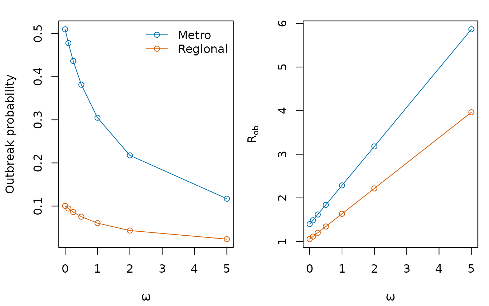

Why use an overdispersed model?
The getting-started tutorial assumes that directed offspring counts are Poisson. Real transmission is often more variable: many infected people generate no secondary cases while a smaller number generate many. Routbreak’s negative-binomial option asks how that additional variation changes emergence risk while keeping every entry of the mean reproduction matrix fixed.
community <- c("Metro", "Regional")
R <- matrix(
c(
1.30, 0.05,
0.50, 0.80
),
nrow = 2,
byrow = TRUE,
dimnames = list(destination = community, source = community)
)
poisson <- rob_table(R)
overdispersed <- rob_table(R, offspring = "nb", omega = 0.7)
poisson[, c("community", "outbreak_probability", "R_ob")]
#> community outbreak_probability R_ob
#> 1 Metro 0.5098093 1.398485
#> 2 Regional 0.1004173 1.053845
overdispersed[, c("community", "outbreak_probability", "R_ob")]
#> community outbreak_probability R_ob
#> 1 Metro 0.34656431 2.018214
#> 2 Regional 0.06863173 1.459996Greater variability usually lowers emergence probability because more
transmission chains end immediately. Among the minority of chains that
do survive, however, survival selects unusually productive realizations.
This conditioning can increase R_ob even though the mean
matrix R has not changed. The two patterns are compatible:
one concerns the chance of survival, the other compares offspring
conditional on survival with offspring conditional on extinction.
What omega means
For each destination and source , Routbreak assumes an independent negative-binomial count with
omega is the overdispersion parameter, not the
negative-binomial size. The equivalent R parameter is
Setting omega = 0 gives the Poisson limit exactly.
The edge counts are independent. Therefore total offspring from source has variance
This generally differs from applying one negative-binomial dispersion to the column total, which would produce . It also differs from a shared individual-level Gamma infectivity model. A shared latent infectivity would induce dependence among destinations; Routbreak’s implemented model does not.
Outbreak probability and R_ob
For an introduction in source community , outbreak probability solves
Routbreak evaluates the product on the log scale for numerical stability. For positive , the corresponding conditional-expectation expression is
This is not the Poisson shortcut .
A one-community check is especially transparent. With mean
reproduction 2 and omega = 1, outbreak probability is 0.5
and R_ob is 3.
Compare dispersion values
omega_grid <- c(0, 0.1, 0.25, 0.5, 1, 2, 5)
comparison <- do.call(rbind, lapply(omega_grid, function(omega) {
if (omega == 0) {
result <- rob_table(R)
} else {
result <- rob_table(R, offspring = "nb", omega = omega)
}
transform(result, omega = omega)
}))
colors <- c("#0072B2", "#D55E00")
old_par <- par(mfrow = c(1, 2), mar = c(4.2, 4.2, 1.5, 0.8))
plot(
NA, xlim = range(omega_grid),
ylim = range(comparison$outbreak_probability),
xlab = expression(omega), ylab = "Outbreak probability"
)
for (name in community) {
selected <- comparison$community == name
lines(comparison$omega[selected], comparison$outbreak_probability[selected],
type = "o", col = colors[match(name, community)])
}
legend("topright", community, col = colors, lty = 1, pch = 1, bty = "n")
plot(
NA, xlim = range(omega_grid), ylim = range(comparison$R_ob),
xlab = expression(omega), ylab = expression(R[ob])
)
for (name in community) {
selected <- comparison$community == name
lines(comparison$omega[selected], comparison$R_ob[selected],
type = "o", col = colors[match(name, community)])
}
For a fixed mean reproduction matrix, increasing independent-edge overdispersion reduces emergence probability and changes survival-conditioned outbreak reproduction ratios.
par(old_par)The curves should be interpreted jointly. A higher conditional ratio does not mean that emergence is more likely; it describes the stronger selection among the fewer transmission chains that survive.
Assumptions and limitations
- One scalar
omegaapplies to every directed edge. Heterogeneous dispersion matrices are not implemented. - Edge counts are independent conditional on the source individual. Shared infectivity or correlated destinations require a different model.
-
outbreak_prob()returns zero correctly below threshold, but the publication does not establish an NB continuation forR_obwhen an outbreak probability is zero.r_ob()androb_table()therefore report that unsupported regime rather than applying the Poisson continuation. - The calculation concerns the early branching phase, not final epidemic size.
The inference model in the early-transmission tutorial uses a Poisson likelihood. Selecting NB offspring here does not turn that inference procedure into a negative-binomial likelihood.
The formulas follow Wang B and Valdano E (2026), PLOS Computational Biology 22(7): e1014425. https://doi.org/10.1371/journal.pcbi.1014425